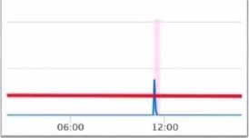
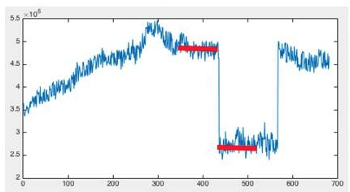

【异常检测】无监督
常见的异常种类:
- 点异常：单个数据与其余实例距离较远
- 上下文异常：时序数据，某个时刻突变
1.传统数据挖掘-异常检测
基于(样本x特征)的数据
(1) 统计与概率模型
依据数据的分布做假定
- 3sigma
- 四分位点
箱线图中的四分位点以及异常值, Tukey’s Test: 根据四分位点对最小值和最大值的估计分别是
\[min_value = Q1 - k(Q3-Q1)\]
\[max_value = Q3 + k(Q3-Q1)\]
其中k=1.5 时候可认为是中度异常，k=3时是极度异常。该方法应该假定了数据正态分布(或者是对称分布吧)
- 检测异常值Grubbs的检验（Grubbs 1969和Stefansky 1972）用于检测单变量数据集中的单个异常值，该单变量数据集遵循近似正态分布。如果您怀疑可能存在多个异常值，建议您使用Tietjen-Moore测试或广义极端学生化偏差测试而不是Grubbs测试
(2) 线性模型
- PCA
- 协方差矩阵
(3)基于相似度/距离衡量的模型
- k近邻
- 基于密度的 LOF, COF, Isolation Forest
- OneClassSVM
(4) 聚类的方法， BIRCH，DBSCAN
2. 行为序列的异常？
3.时间序列
场景1: 是否超出某个阈值

看一段窗口内的均值是否超过THRESHOLD
场景2：数据突变
正常情况应该是光滑的曲线，不应该出现突然的上涨或下跌。=> 检测环比附近的数据

前后窗口均值比值 \(r(t)=\frac{x_t + ...x_{t-w+1}}{x_{t-w}+..+x_{t-2w+1}}\)
场景3：数据有规律的周期波动
检测同比，看有无异常。 统计历史上相同侍寝的数据的均值、标准差，假设正态分布，计算z-score
工具
Python异常检测工具库Pyod
关于时间序列的检测 工具包 https://github.com/rob-med/awesome-TS-anomaly-detection
相关论文资源：
https://github.com/yzhao062/anomaly-detection-resources
参考
https://blog.csdn.net/weixin_38730719/article/details/88026338
https://zhuanlan.zhihu.com/p/93779599
https://www.zhihu.com/question/280696035/answer/417091151
https://blog.csdn.net/g2v13ah/article/details/78474370
Copyright © 2015 Powered by MWeb, Theme used GitHub CSS.